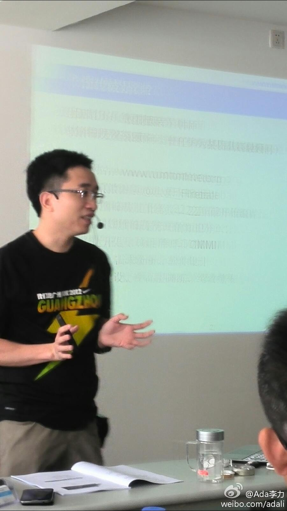
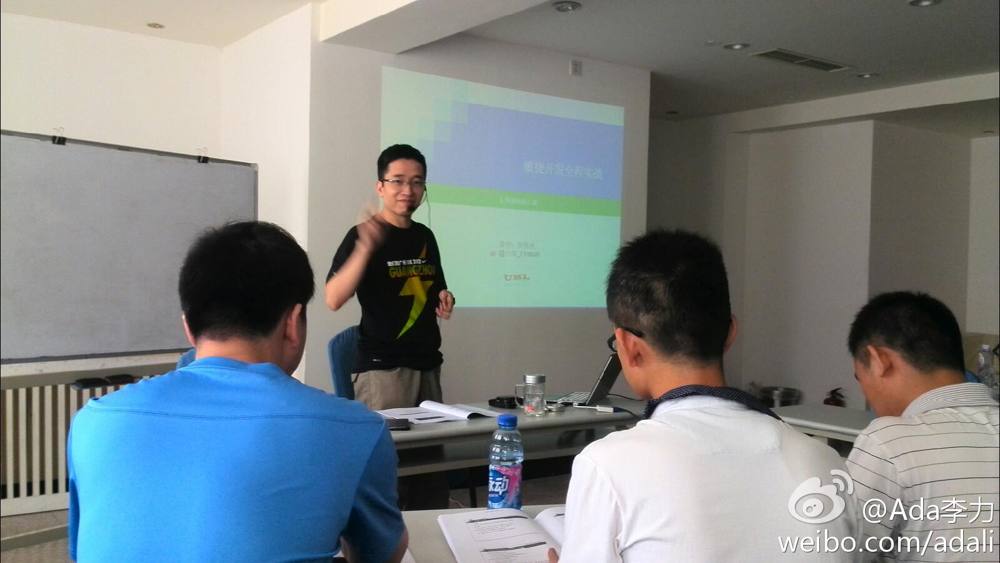

回复@熊沫:谢谢纠正，是今目标 网页链接 @有车邦朱诚 //@熊沫:今目标@Ada李力:最早知道金目标这个做企业工作平台的公司，还是CTO俱乐部的一位朋友提到，说是他朋友做的，苦熬了很多年，还是看不到盈利希望。今天想试用下这个平台，点开了创始人的博客，才发现五月份它获得了老虎基金的千万美元投资，熬了九年的结果。
对中小企业来说，我觉得，只有财务软件是最不可或缺的，顶多再加个人事管理软件。@Ada李力:周末看了些提供企业服务的SaaS平台，感觉很多免费功能都很鸡肋，比如文档中心，日历，邮箱，在线沟通等等，都有更流行的软件可以替代。这些平台的优势，只是整合了这些功能，感觉吸引力不大。
看过@付伟的轻描淡写 写过的一篇文章，他说了这种现象，让某个技术人员做个报表统计，对方需要做技术选型，代码开发，测试，部署，上线等等，至少需要三天的时间。其实只是一张表的统计，一个人花半个小时数数算算，就出来结果了。－ 大炮打蚊子的事情，在程序员堆里常见。@Ada李力:热衷发掘各种提高效率的工具，不过也得常常提醒自己，别过头。有时候人工比机器有效率，尤其在规模小的情况下。
//@林中路边: 中小企业的财务软件主要用途应该是“对外”，如税务局、银行等。对内管理会计，财务软件支撑不了，业务上也达不到精细核算的能力，流于形式，聊胜于无！//@阿朱: 对于中小企业，财务软件真的是不可或缺吗? 能否再把财务软件细拆分一下，我们才能看到真正的需求。@Ada李力:周末看了些提供企业服务的SaaS平台，感觉很多免费功能都很鸡肋，比如文档中心，日历，邮箱，在线沟通等等，都有更流行的软件可以替代。这些平台的优势，只是整合了这些功能，感觉吸引力不大。
//@蓝海何晓阳: Ada，你看的很多SaaS都是非专业软件，不光免费功能鸡肋，收费功能也未必不鸡肋。SaaS更多还应该是专业软件天下，无论是国外的workday/salesfoce/linkedin/zendesk/new relic，还是国内的北森/销售易/oneapm，免费版的功能足以抵得上之前收取很多license费用的企业版软件。@Ada李力:周末看了些提供企业服务的SaaS平台，感觉很多免费功能都很鸡肋，比如文档中心，日历，邮箱，在线沟通等等，都有更流行的软件可以替代。这些平台的优势，只是整合了这些功能，感觉吸引力不大。
回复@申导:讲师是张传波，课程介绍在这里 网页链接 //@申导:回复@Ada李力:这是谁讲的scrum？@Ada李力:很长时间没上过课，这次要参加一天的“敏捷开发实践”。@火球_Fireball 